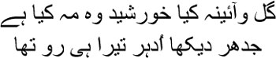
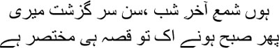
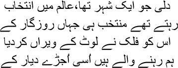
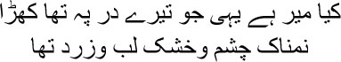

5

I gaze at the flowers, the mirror, the sun and the moon
Wherever I look, your face is all I see
 y boat sailed on an infinite sea, Manto bhai. The beginning of my lifelong pursuit of what cannot be seen. It was then that the pen became my pennant. Do you know what my quills were made of? They were made of the broken arrows of my warrior ancestors. The first day that I wrote a sher, I felt as though I had been carrying the seeds of poetry within me since the beginning of time. Don’t you agree that you cannot try to write poetry? Poetry must come to you on its own. But we don’t know why it comes, or how. Do you know what I think? I think you cannot call someone a poet even if he has written a thousand ghazals, but if he can write even a single sher like a howl of pain, smeared with all the blood in his heart, then and only then can we call him a poet. Poetry isn’t a sermon delivered from a mosque, after all; it is one’s final words from the edge of the ravine, face to face with death. I wrote about my love, my ishq, on bloodstained paper day after day, Manto bhai, my hand became numb, but still I wrote. I knew that my ghazals would provide comfort to many people one day. It wasn’t pride, Manto bhai, but wounds—I wrote about each of my wounds—how could it not touch people?
y boat sailed on an infinite sea, Manto bhai. The beginning of my lifelong pursuit of what cannot be seen. It was then that the pen became my pennant. Do you know what my quills were made of? They were made of the broken arrows of my warrior ancestors. The first day that I wrote a sher, I felt as though I had been carrying the seeds of poetry within me since the beginning of time. Don’t you agree that you cannot try to write poetry? Poetry must come to you on its own. But we don’t know why it comes, or how. Do you know what I think? I think you cannot call someone a poet even if he has written a thousand ghazals, but if he can write even a single sher like a howl of pain, smeared with all the blood in his heart, then and only then can we call him a poet. Poetry isn’t a sermon delivered from a mosque, after all; it is one’s final words from the edge of the ravine, face to face with death. I wrote about my love, my ishq, on bloodstained paper day after day, Manto bhai, my hand became numb, but still I wrote. I knew that my ghazals would provide comfort to many people one day. It wasn’t pride, Manto bhai, but wounds—I wrote about each of my wounds—how could it not touch people?
For days on end I’ve seen how blood oozes out of the heart. Let me tell you about my childhood, then. My blood has been seeping out ever since those days, and now it has clotted into a rock that weighs me down. You know what Mir sahib said in his sher, don’t you?

Yes, I am the flame of twilight
My story is indeed short
Consider, when I was born, an empire was ending. So many times I have dreamt of having been born in the time of Jahanpanah Akbar; if I had even been born in the eras of Jahanpanah Jahangir or Shahjahan, I would not have had to spend my entire life like a stray dog on the streets. Khuda sentenced me for my sins to a hell where the royal court had been reduced to a leftover. And I had to wait hand and foot on that Bahadur Shah, who couldn’t write a line of a ghazal to save his life! But then, Allah is merciful, perhaps this was his plan for me.
I never saw my father. Many people used to say I resembled him. When I was a little grown up, I used to stand before the mirror, looking for Abdullah Beg Khan in the reflection of my face. He died on a battlefield somewhere, my mother didn’t even get a chance to see his corpse. A man disappeared suddenly, without leaving a trace behind, no one had even drawn a portrait of him to remember him by. In Jahanpanah Aurangzeb’s time, painting was considered immoral. Otherwise, just consider, has anyone ever seen an art gallery of the likes of the Mughal court’s? Are there better artists in the world than the musavvirs from Persia? Have you heard of Bihzad? It’s doubtful whether a painter of such calibre is born even once in a thousand years.
Alas for my mother. Not a single picture remained for her. If I don’t tell you about her you will not understand my childhood and my adolescence, Manto bhai. Much later, when I was nearly an old man, thinking of my mother made me realize that her entire life was actually a single word: waiting. You know that the colour of waiting is blue, don’t you? The blue that drips from depression. She had no family of her own, no home of her own. All she could do was wait for my father to come home. He would come for a few days at best, spending those few nights with her. That was how Yusuf, Chhoti Khanum and I were born. I don’t know whether there were other births between ours. Sometimes I even wondered whether Abdullah Beg Khan really was our father. Apparently the walls of Kale Mahal held many secrets. But never mind all that. Dilli and Agra were full of secret stories anyway.
I had wanted to write a dastan about ammijaan, Manto bhai. But writing stories isn’t easy. You have to keep writing the way daily labourers do. I didn’t have such stamina. Since I’ve written the history of the Mutiny, the Dastambu, since I’ve written reams of letters, you might ask why I couldn’t have written the dastan about my mother. Maybe I could have. I would even sit down with my quill from time to time, but I would find myself shrouded in the darkness of fatigue. I couldn’t write a single word—my eyes would brim with tears. It felt as though we had never had a home in this world—as though my mother never had a home of her own.
Let me tell you what happened one day. I had woken up suddenly in the middle of the night. I saw my walid and my ammijaan sitting quietly on the bed in one corner of the room. My mother’s hands were in his; a bloodstained sword lay at his feet. The sound of horses neighing could be heard, like a continuous storm. My mother’s head was laid on Abdullah Beg Khan Bahadur’s chest.
— What are you so afraid of? Abbajaan was asking her.
— I never get to know where you are, janab. So …
— I live far away bibijaan.
— Where?
— Where nothing but blood flows. Abbajaan’s voice was fogged with exhaustion.
— When will you come again janab?
— I don’t know. If I ever die, don’t look for my grave on earth, bibijaan. I shall be buried in your heart.
— Janab …
— Bibijaan.
— Will we never have a house of our own?
— If I can come back for the last time, never to go away again, we will.
— I don’t like living in Kale Mahal, janab. This isn’t my home, after all. Won’t you build your own mahal?
Bursting into laughter, abbajaan said, ‘The battlefield is my mahal. You can’t ever go there.’
— I shall go.
— Where?
— With you, janab. My mahal is wherever you are.
I saw Abdullah Beg Khan Bahadur pull my mother even closer. He was looking at her as though clouds were gathering in the desert sky. Have you ever seen the baramasa pictures, Manto bhai, which depict the twelve months of the year? Oh, these pictures I have seen once, the books too, each of them a picture. It started with the book of Amir Hamza’s dastan—in Jahanpanah Akbar’s era—whose pictures were drawn by Mir Syed Ali. Jahanpanah Humayun had brought him over from Persia. There were many illustrators in the workshop at the emperor’s palace, all from Persia. Khwaja Abdus Samad was known as the Sweet Pen, Shireen Qalam. So many illustrated manuscripts were created—the Ramayana, the Mahabharata, there was even a book about Nala and Damayanti; and yes, Keshav Das’s Rasikapriya. That was such a wonderful book, Manto bhai. Keshav Das wrote of many different women in Rasikapriya, and the painters created pictures of each of them. They were so beautiful, all of them, radiant like the full moon. You know of the chakor bird, don’t you, which survives by eating moonlight? When it saw one of these ladies on a full moon night, the bird lost its bearings completely, unable to decide which moon to gaze at. Jahanpanah Aurangzeb put an end to all this. Paintings were immoral for him, haraam. The Mughal workshop was closed down. The painters abandoned Shahjahanabad, taking up assignments in the royal courts of the Pahadi kingdoms in the mountains. Dilli’s art workshop, the tasveerkhana, was emptied out; the scraps left behind were wiped out by Nadir Shah and the Marathas, followed by the Englishmen. Do you know what Mir sahib wrote after Nadir Shah looted Dilli?

Dilli, which was the chosen city of this world,
Which the finest people on earth made their home,
Has now been ravaged by time and left in ruins
This devastated city is where I come from
You’re laughing, Manto bhai? You’re right, I’m just as bad as you are, once I start talking there’s no knowing where I’ll meander—I lose my bearings. You know what, once the words begin to flow, I wonder where they came from. I wasn’t even born when they were created. Who is actually talking within me? I am astounded Manto bhai, really astounded—how many different people do you suppose are hidden inside each of us? Do people who lived even before you were born still live inside you? Do you know how it feels? As though a distant mist is rolling over my mind.
I was telling you about the baramasa pictures, wasn’t I? These pictures originated in the Pahadi kingdoms. I was reminded of them from the way my father was looking at my mother. The painters would sometimes come down from the hills to Shahjahanabad to sell their works. I had seen a painting of the month of Bhadon from one of them. First I must tell you the mystery of Bhadon, Manto bhai. No one can stay away from their beloved in this month of love. Even those who travelled abroad on business returned to their wives in Bhadon. Overcast skies, water dripping from leaves all night, the vines trembling in the breeze, can you possibly bear to be separated from your lover at this time? The fragrance of the magnolia and the frangipani carried on the moist wind is bound to make bodies long for one another. In that picture I saw a golden streak of lightning caressing the thick dark clouds, a flock of cranes flying like parched creatures into the depths of those clouds, the breeze flirting with the trees, lovers sitting in the balcony upstairs. If you had seen them, Manto bhai, you’d have known at once that they were Radha and Krishna. A peacock on the parapet beneath the balcony gazed at the dark grey sky, and in the uncovered balcony downstairs sat a woman, passionate, waiting for someone. Perhaps it was my mother. Ammijaan was like the dark clouds spread across the sky, like the golden lightning, Abdullah Beg Khan had come to her unexpectedly. It takes such a long wait for two people to want each other so, Manto bhai, the way the azan longs to meet Allah. Abdullah Beg Khan kissed his wife so tenderly that night, Manto bhai, and made love to her. The dream unfolded before my eyes; I feel no guilt about it, Manto bhai, can there be any guilt in watching Krishna make love to Radha? That was the only time I saw my father—in my dream.
I never got the chance to catch my mother’s eye. She had a lot of responsibilities in the ladies’ chambers; my brother, sister and I used to hover about nearby, but she didn’t have the time to spare even a glance at us. Chhoti Khanum was allowed to be with her at night, of course. Yusuf and I occupied the diwankhana. I had realized as a very small child, Manto bhai, that Kale Mahal was not my home. We lived there, true, but the three of us were different from everyone else. That was probably why Yusuf went mad. Chhoti Khanum didn’t live long, either. Only I was chosen by Allah to be punished, to be charred black in the flames of dozakh, of hell. Humans cannot go against Rahman’s wishes, after all. Perhaps it was for Asad in Kale Mahal that Mir sahib had written:

Is this the Mir who stood at your door
With moist eyes, dry lips, and ashen face?
It was sport that saved Asad eventually, Manto bhai. Kite-flying and chess: patangbazi and shatranj. In both, you have to fight all by yourself, without anyone by your side. In both, your eyes must be rooted to one specific spot—the sky in one case and the black-and-white squares in the other. You’re sure to lose if they’re not. Sport brought me victory, Manto bhai, and life, one defeat after another.
I still remember those days of flying kites and racing pigeons. A tempest would rage in my Turkish blood, Manto bhai. I hated being cooped up in Kale Mahal. I would either wander around Agra’s streets, or go up to people’s roofs to fly kites. Sometimes I would play chess late into the night at Bansidhar’s house. We used to fly our kites from the roof of a large haveli next to Kale Mahal. Yusuf and Kanhaiyalal used to be there, many others too, I no longer remember everyone’s name. I often competed against Raja Balban Singh’s kites. When I lost, I used to think, tomorrow will soon be here, I’ll definitely beat him tomorrow. Turkish blood flowed in my veins, Manto bhai, could I possibly lose every single day? Many years later, Kanhaiyalal came to Dilli and showed me a masnavi. I had written it when I was eight or nine. It was about the mysteries of patangbazi. Ek din masl-e-patang-e-kaghzi, leke dil sar rishta-e-azadgi. Like a kite, my heart had once yearned to fly to freedom.
I was drawn even more strongly to chess. Do you know why? Shatranj is a battlefield. Every time I captured one of Bansidhar’s pieces, I scented blood. This was how my days went by. Then I took up chausar as well. Gambling with dice. Maikhana, mehfil, sharaab. Taverns, poetry sessions, wine. I used to visit tawaifs too. Courtesans. What could I have done? I didn’t enjoy spending my time in Kale Mahal—I saw so little of my mother there. Her place was in the ladies’ chambers. I had no one else to call my own. I used to study at Mir Azam Ali’s madrassa; Shaikh Muazzam taught me, but I didn’t enjoy learning all this, Manto bhai. Such wonderful words used to knock at the doors of my heart; as I wandered about the streets I used to lay those words out, someone used to speak inside me. I would start in surprise—arre wah, how wonderful, this was a sher. Yes, Manto bhai, I, Mirza Ghalib, can say with pride that I wrote ghazals from the age of nine. Then janab Abdul Samad came; he spent two years at Kale Mahal. It was from him that I learnt the beauty and the mysteries of Farsi. I wrote my ghazals in Urdu, it is true, but I believe that the only real language for the ghazal is Farsi, Manto bhai. And that a real tasveer can only be painted by a musavvir from Persia.
‘Do you go to the madrasa every day?’ my mother asked me.
— I do.
— Study hard, Asad. You cannot stay here in this house forever.
— Yes.
— You will build your own house. Yusuf, Chhoti Khanum and I will go and live with you.
As you know, Manto bhai, I never had a mahal of my own. Eventually I abandoned ammijaan in Agra and went away to Shahjahanabad. Before that my wedding with Umrao Begum took place. I was imprisoned again, Manto bhai. You will have to listen to many tales of my incarceration from your grave.